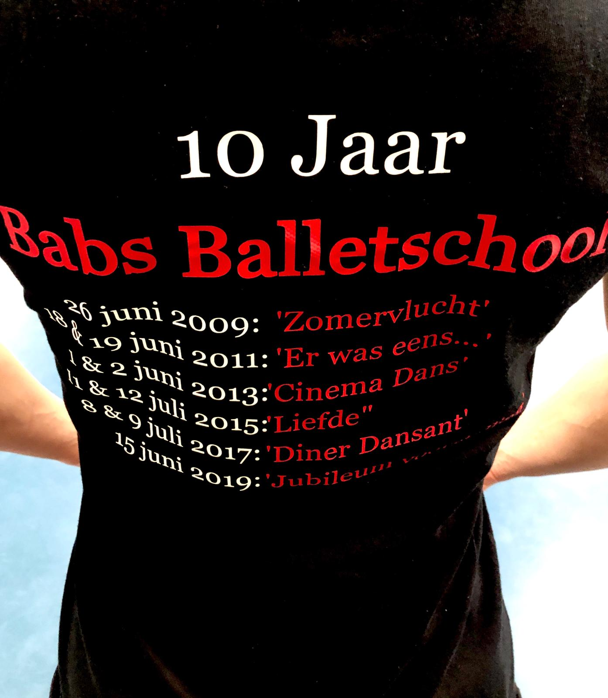

Carnaval
 op 7 april mogen de kinderen van de K4W een gastoptreden verzorgen bij Carnavalsvereniging 'de Batsers' tijdens hun Jeugdzitting. Ze hebben er enorm veel zin in. Komt dat zien , komt dat zien in 'het Wapen'in Elst. Aanvang 14:00 , kaartjes a € 2,50 zijn te reserveren via Babs.
op 7 april mogen de kinderen van de K4W een gastoptreden verzorgen bij Carnavalsvereniging 'de Batsers' tijdens hun Jeugdzitting. Ze hebben er enorm veel zin in. Komt dat zien , komt dat zien in 'het Wapen'in Elst. Aanvang 14:00 , kaartjes a € 2,50 zijn te reserveren via Babs.
Kadootjes
Ter gelegenheid van het 10 jarig bestaan zijn er leuk kadootjes te koop. Bijvoorbeeld een set van danskaarten van de afgelopen 10 jaar voorstellingen! € 10,- per set. Je kunt ook een jubileum t-shirt of hoodie met rits van de balletschool bestellen. Verkrijgbaar in zwart in diverse maten. bestel via babs@babsballetschool.nl 
Jubileum voorstelling

Op zaterdag 15 juni is onze Jubileum voorstelling in de schouwburg Arnhem. Het zal een matinee en een avond voorstelling worden.
In de kleedkamer hangt een lijst met alle groepen wie wanneer danst.
Kaartverkoop Voorstelling
per 1 april 2019 start de kaartverkoop voor de voorstelling, er is deze keer geen limiet per leerling want we dansen in de grote zaal van het theater. Nodig je publiek dus vooral uit om te komen kijken!
kaartverkoop gaat via het theater:https://www.musisenstadstheater.nl/
Dansfeest en Reünie

zaterdag 22 juni vieren we dat we 10 jaar bestaan, met leerlingen en oud-leerlingen. Kom mee dansen en gezellig een drankje drinken en bijkletsen.
van 16:00-18:00 is er een disco voor iedereen t/m 15 jaar.
vanaf 20:00 mag iedereen vanaf 16 en ouder met de voetjes van de vloer!
Graag vooraf aanmelden via babs@babsballetschool.nl
BalletPuzzel
 ⬆⬆⬇⬇⬅➡⬅➡ ba
⬆⬆⬇⬇⬅➡⬅➡ ba